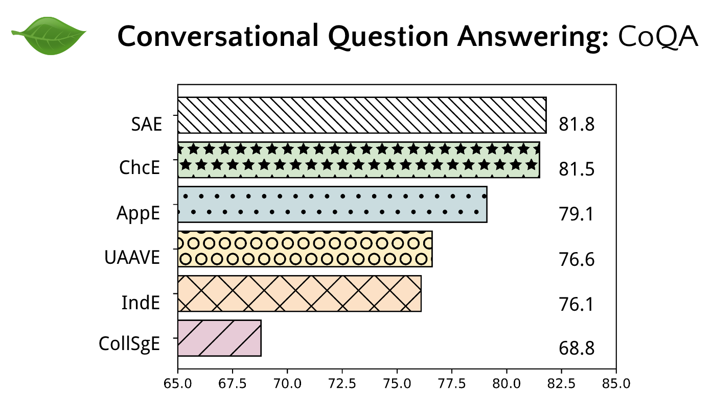
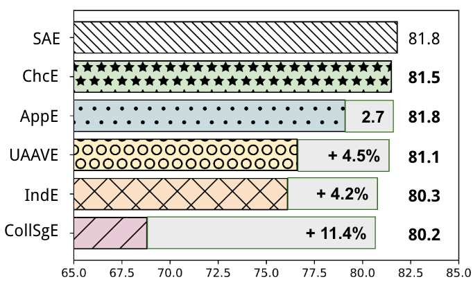

Stress Tests
Next, we use Multi-VALUE to stress-test systems for three dialectal tasks: question answering, semantic parsing, and machine translation. We can focus on the Conversational QA task, but the results reflect the Semantic Parsing and Machine Translation results too.
CoQA is a reading comprehension benchmark where questions are conversational — in response to answers, they have follow-up questions. Baseline CoQA performance from a RoBERTa-base model is 81.1 F1. Chicano English leads to an insignificant drop, but Appalachian English drops by 3.4%, and Urban African American English drops 6.7%, while Indian English drops 7.5%. The largest performance drop is in Colloquial Singapore English, with a score of 68.8, or 18.9% worse than the Standard model. Overall, these large and statistically significant performance gaps show the pervasiveness of English dialect disparity.

Qualitative analysis shows that dialectal errors can cascade down the conversation, leading to model failures on later unperturbed questions as well. In some cases, the transformations cause the model to respond with the wrong class of answer, like giving a noun phrase or a prepositional phrase for a simple yes/no question. Finally, we see that some of the biggest drops, like with Colloquial Singapore English, can be largely due to a handful of especially challenging features that show up in this dialect. Future work can quantitatively measure the correlations between errors and the presence of certain features across a variety of tasks.

Fine-tuning on synthetic in-dialectal training data can help close the performance gap, adding performance boosts of up to 11.4% F1, and reaching near parity with the standard model.